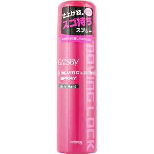

返回列表
产品名称：ギャツビー ムービングロックスプレー エクストラハード

マンダム ギャツビー ムービングロックスプレー エクストラハード １７０ｇ
メーカー マンダム
JANコード 4902806212259
商品の特徴
仕上げ技。
スゴ持ちスプレー
香り改良クリアフローラル
しっかりなのに軽くパリパリしない
成分・分量
エタノール、ＬＰＧ、アクリル酸アルキルコポリマーＡＭＰ、ＤＰＧ、パンテノール、（アクリレーツ／アクリル酸アルキル（Ｃ１-１８）／アルキル（Ｃ１-８）アクリルアミド）コポリマーＡＭＰ、香料
用法及び用量
【使用方法】
○髪全体、または動きをつけたい部分を中心に、髪から15～25cmはなして軽くスプレーしてください。